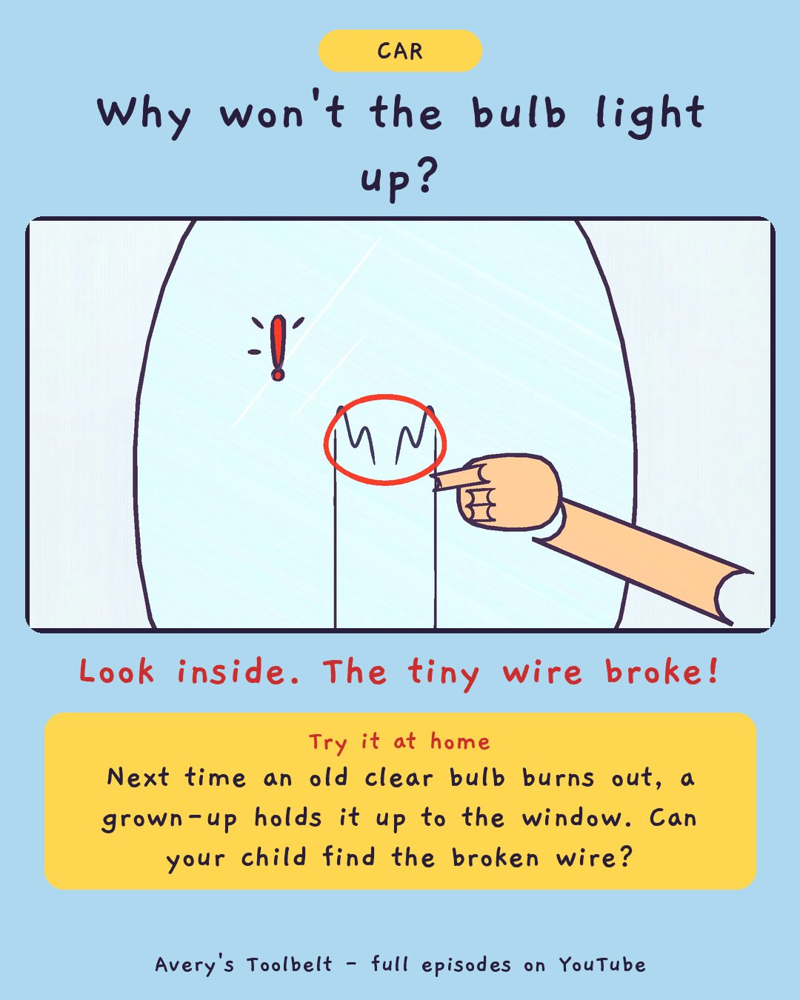

The ListWhy Won't the Headlight Come On?
那張清單

Why won't the bulb light up?
Look inside. The tiny wire broke!
Try it at home
Next time an old clear bulb burns out, a grown-up holds it up to the window. Can your child find the broken wire?
Free printable coloring page (PDF) Watch the full episode on YouTubeAbout this episode, for grown-ups
Saturday is the car show, and Avery has decided she is the one who says Betsy is ready. So she makes a list - a long one - and every day after school she checks another line with Dad in the garage. Her little brother Gus only wants the pencil, and every day he draws one dog at the bottom.
But on Saturday morning, in the dark, one of Betsy's headlights won't come on. Avery checked it on Tuesday. How can a light be fine one day and broken the next?
What children find out: a light bulb has a tiny wire inside that has to be in one piece - and you can only see a broken one by switching it on in the dark and looking.
For grown-ups: an episode about doing everything right and still having a hard day - and about naming the feeling. "You're not in trouble. You're disappointed. That's the word for it, and it's allowed."